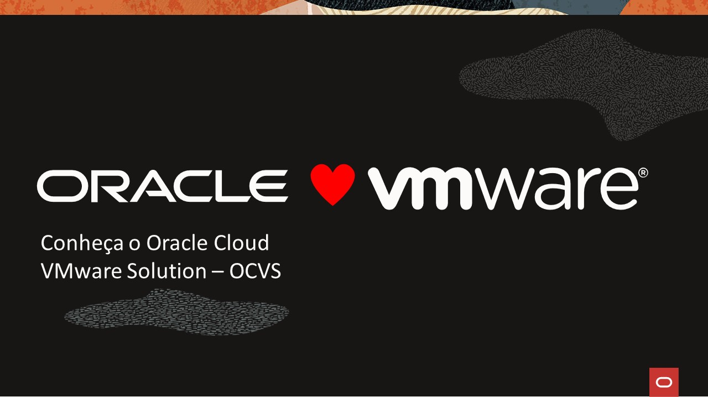
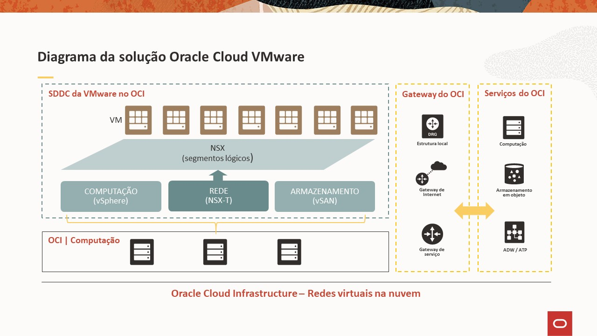
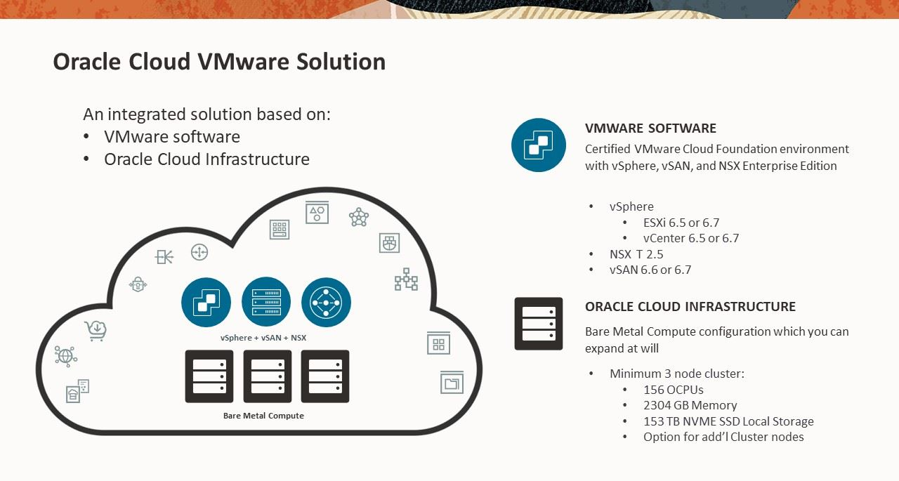
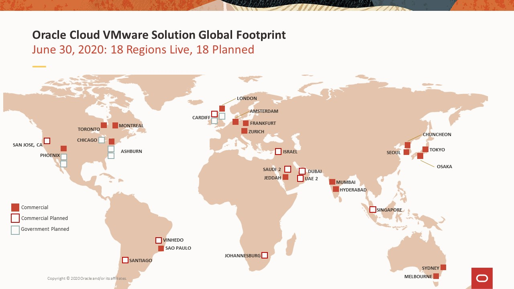
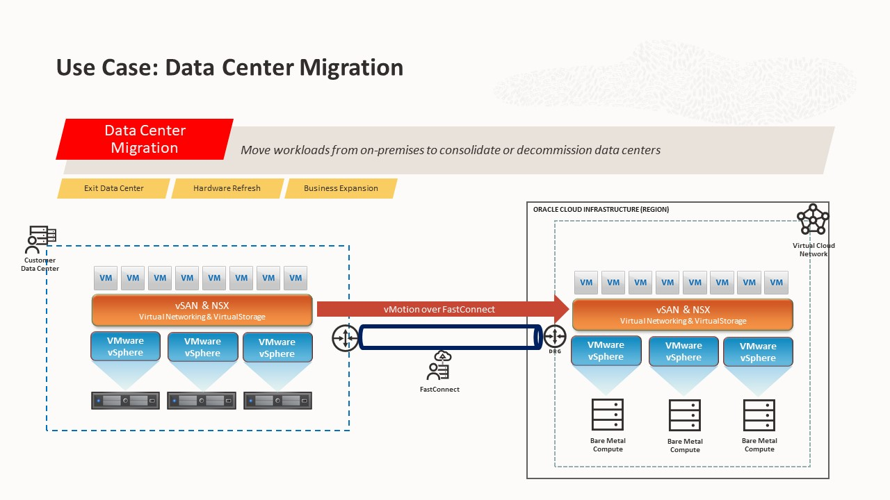
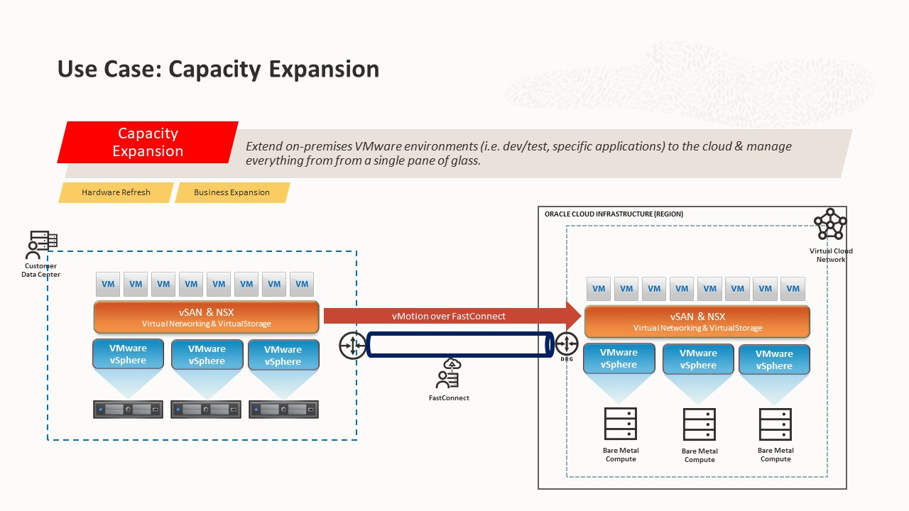
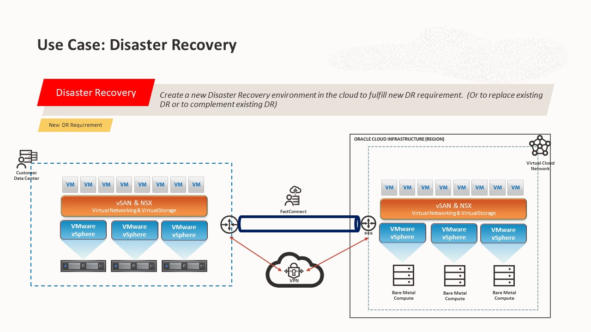

Conheça o Oracle Cloud VMware Solution - OCVS
Blog Oracle OCI OCVS VMwareCompartilhe esse post nas redes sociais...

Olá Homelabers!
Acabei de perceber que já estou há 7 meses trabalhando na Oracle e 7 meses de pandemia. Comecei na Oracle, em uma quinta-feira, 12/03. Fui apenas dois dias ao escritório e na segunda-feira já estourou a pandemia e não voltei mais. Esse ano de 2020 além de estar uma loucura, passou voando.
No post de hoje, vou falar sobre um “novo” produto da Oracle que estou conseguindo trabalhar bastante, o Oracle Cloud VMware Solution ou OCVS. A ideia desse post é aterrissar o assunto e depois, nos próximos posts ir me aprofundando mais sobre o produto.
O OCVS foi anunciado pelo Larry Oracle Ellison em 2019 durante a Oracle Openworld e causou um grande furor na comunidade VMware, pois a parceria entre Oracle e VMware foi uma grande surpresa para muita gente - foi até chamado de O Milagre do Moscone
Eu me lembro que estava “namorando” com a Oracle na época e fiquei bastante animado com o anúncio e muito curioso para colocar minhas mãozinhas nesse produto.
O tempo passou e no último dia 06/08/2020 aconteceu o anúncio oficial e aqui estou eu para começar uma série sobre OCVS para vocês.
O que é o Oracle Cloud VMware Solution?
O Oracle Cloud VMware Solution ou OCVS é um produto da Oracle que permite executar o stack SDDC (VMware Cloud Foundation) da VMware em servidore Barel Metal na Oracle Cloud.

- Um produto da Oracle que combina o Oracle Cloud Infrastructure e o software VMware
- Uma solução certificada da plataforma VMware Cloud Foundation
- Vendido pela Oracle e por seus parceiros
- Suportado pela Oracle
Hardware & Software
O deploy de um Cluster SDDC do Oracle Cloud VMware Solution inicia com um mínimo de 3 hosts Baremetal (oi vSan).
Cada host tem 52 oCPUs (Cores físicos), 768 GB RAM e 51 TB de Storage NVME SSD. O processador desse host Baremetal é um Intel Xeon Platinum 8167M de 2.0 GHz - ou seja, um senhor processador.
No total, um cluster mínimo entrega **156 oCPUS (Cores Físicos), 2304 GB Memória RAM e 153 TB de Storage NVME SSD (raw). **

Falando de software, você pode escolher entre 2 versões do vSphere + NSX + vSAN:
- vSphere 6.5 Update 3 ou vSphere 6.7 Update 3
- NSX-T 2.5
- vSAN 6.6 ou 6.7
Principais Benefícios
It’s JUST VMware!
Eu vejo vários benefícios do OCVS, principalmente se você tem workloads Oracle rodando On-Prem.
- Flexibilidade da Cloud - Você pode facilmente aumentar ou diminuir o seu workload (# de hosts) de acordo com a sua necessidade. Um novo cluster SDDC demora em média 3 horas para ser provisionado.
- Controle Total - O OCVS é a única solução (atualmente) que entrega ao cliente total controle sobre o seu ambiente vSphere. Ou seja, você - e somente você - tem acesso root aos servidores ESXi, vCenter, NSX, etc. Você decide quando e como fazer seus upgrades e/ou updates.
- Mantenha o seu ambiente - Você pode continuar utilizando as mesmas ferramentas que você utiliza hoje no seu ambiente on-prem, sem a necessidade de migrar, atualizar ou converter nada.
- Localização - A Cloud Oracle hoje está presente em 18 localidades ao redor do mundo e no Brasil temos 1 DC operacional (em SP) e um próximo no roadmap para 2021. Você pode rodar o seu workload VMware no Brasil sem nenhum custo extra. Na Oracle Cloud, o custo é totalmente independe de onde o seu workload está - lindo isso não?
- Aproveite seu conhecimento - Com o OCVS você não precisa aprender outras tecnologias, você vai usar o mesmo conhecimento de VMware que você tem hoje.
- Integração com Oracle Cloud - E lembrando que o cluster SDDC do OCVS roda dentro de uma VCN, ou seja, o seu VMware está ali do ladinho de todos os serviços OCI. Você pode facilmente migrar seu banco de dados Oracle que está dentro do ambiente vSphere para um serviço na Cloud Oracle (DBaaS e Exatada) e suas aplicações continuam no vSphere.

Casos de Uso
Os principais casos de uso para o OCVS na minha opinião são:
-
Migração de Datacenter

Migração de Datacenter On-Prem para Cloud é um caso de uso bastante comum para o OCVS.
Se você precisa sair do seu datacenter atual, seja por redução de custos, mudança de fornecedor, mudança física, etc o OCVS é uma excelente opção, pois você pode facilmente migrar seus workloads VMs sem a necessidade de mudar nada em suas aplicações. Basta criar uma interconexão entre o datacenter on-prem e o OCVS e usar uma ferramenta para migrar - vSphere Replication, SRM, Cross vCenter vMotion ou alguma ferramenta de replicação como Veeam, Zerto, etc.
Outro caso de uso bastante comum é o refresh tecnologico. Se você tem um parque de servidores antigos, fora de garantia e tem um refresh planejado, você deve avaliar migrar seus workloads para o OCVS.
-
Expansão de Capacidade

Imagine o seguinte cenário, acabou de aparecer um novo projetoque precisa entrar em produção no final do ano, onde será preciso comprar hardware para sustentar o ambiente, mas o seu fornecedor deu o prazo de 90 dias para te entregar as máquinas.
O que fazer? OCVS to the Rescue. Você pode facilmente contratar o OCVS e expandir a sua capacidade para atender o projeto.
-
Disaster Recovery

Outro caso bastante comum é a utilização do OCVS como site de DR (Disaster Recovery). Você pode facilmente provisionar um ambiente OCVS e replicar seus workloads para nuvem.
Até o momento os parceiros homologados de DR para o OCVS são: Zerto, Veeam, Rackware, CommVault e Actifio.
Mais informações
Vou deixar alguns links oficiais e outros criados pela comunidade.
- https://www.oracle.com/br/cloud/compute/vmware/
- https://blogs.vmware.com/virtualblocks/2019/12/13/oracle-cloud-vmware-solution/
- https://www.oracle.com/br/news/announcement/oracle-cloud-vmware-solution-2020-08-06.html
- https://blogs.oracle.com/cloud-infrastructure/announcing-a-certified-vmware-solution-on-oracle-cloud
E para finalizar, no mês passado eu fiz 2 apresentações sobre o OCVS. Uma no VMUG São Paulo e outra no VMUG Rio de Janeiro. Para ver o vídeo gravado, é só acessar esse post
Aguardem novos posts sobre OCVS em breve aqui no Blog. Se você quiser saber mais informações, conhecer melhor o produto, é só me procurar!
Fiquem seguros!
Compartilhe esse post nas redes sociais...
Valdecir Carvalho
Nerd e pai orgulhoso da Mariana e João. Profissional Sênior de TI com foco em arquitetura de infraestrutura e cloud computing. Blogueiro, podcaster, palestrante, amante de comunidades técnicas, fotógrafo aposentado e adora jogos antigos.
#vExpert · #VMUGLeader · #VUGBrasil · #vBronwBagBrasil · #VeeamVanguard